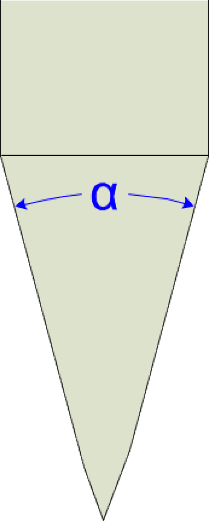
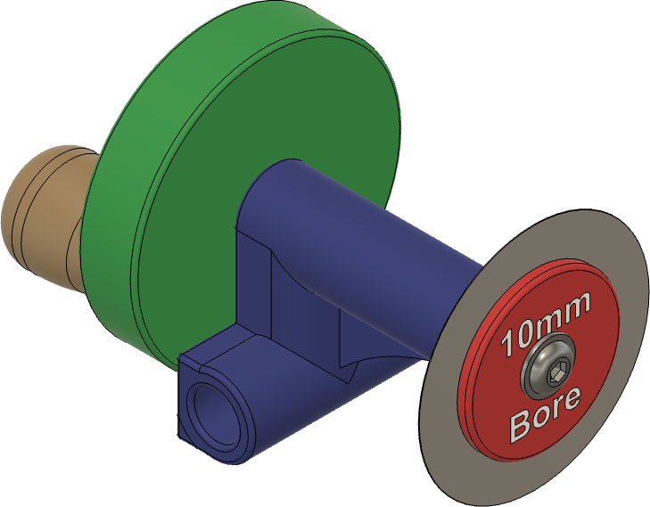

|
|
|
Rotary Cutters |

Edge Angle

Rotary cutter being held in 3D-printed jig
Wheels on Rotary Cutters are sharpened according to the angles shown below. The calculation of α is measured according to the drawing to the right.
These are sharpened using the a jig which holds the blade securely whilst allowing it to be rotated when being ground on the grinding wheel. Consistent speed in the rotation is key to ensuring that the blade does not have any flat spots.
|
To be creative is to let little pieces of your heart go and place them into each project you make. Pat Bravo |
|
General Guidelines |
|||||||||||||||
| α |
Sharp
|
Notes |
|||||||||||||
|---|---|---|---|---|---|---|---|---|---|---|---|---|---|---|---|
| 22° - 24° |
|
The noted angle range is a best estimate; it is best to match the existing edge if possible. It is often difficult to get the blade positioned for sharpening at such a small α angle. The result is that the blade may end up with a micro bevel. This is not problematic per se; however the sharpener must be sure that the micro bevel is honed. Unless the blade needs to be re-ground, honing is usually sufficient. Feedback I have received is that these need to be sharper than scissors to enable the seamstress to cut cloth easily. |
|||||||||||||
The jig shown above is detailed on the jigs page, Rotary Knife Jig. It is mostly 3D printed so it can be made easily and inexpensively.
Sharpness scales (as shown in the grey icon to the left) are used to indicate the recommended sharpness for the blades noted above. You can click on any of the icons showing the sharpness scale and be redirected to the page describing this more. Lower numbers are duller; higher numbers sharper.
These are general recommendations; you will need to use your own judgment, based on the knive’s intended purpose.
Sharpen the blade using the Tormek DE-250 grinding wheel (1,200 grit). These blades are typically quite hard steel, so the diamond wheel is useful for setting the edge.
Based on how the blade is held it is best to use the USB in the horizontal position. This is edge-leading grinding, so do not be too aggressive with the grinding.
|
Honing Wheel Option |
Honing Compound |
|---|---|
| Paper wheels on a bench grinder |
|
| Medium density fibreboard (MDF) ① ② | |
| Tormek leather honing wheel | Tormek PA-70 honing compound. |
|
|
|
|
Notes:
|
|
Honing is highly recommended. Feedback from my wife was that the unhoned blade was not sufficiently sharpened.
Regardless of the honing wheel used I strongly advise:
You can hold the blade using a bolt with a nut (based on the size specified above), and rotating it with a battery-operated drill. This is shown in the video noted below.

Safety Precautions
Make safety a priority: It is not worth the risk.
These blades get used on cloth which could easily be messed up badly if the honing compound is not removed. Either acetone or isopropyl alcohol is recommended for cleaning the blade after honing.
It is also worth advising the user that such treatment is worth considering before use.